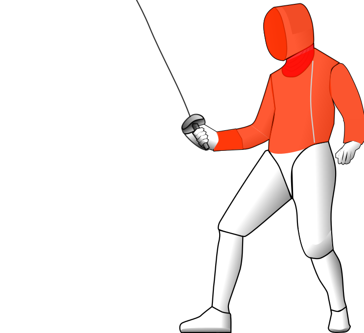

Sabel
De sabel is het explosieve wapen; snelheid en initiatief domineren
De sabel (Frans: sabre) is een slag- en steekwapen waarbij alles boven de romp, minus het manchet, een geldig raakvlak is. De sabel is het enige wapen is waar geslagen mee mag worden, waardoor het heel anders schermt dan floret en degen.

Net als bij floret hoort bij de sabel het 'Recht van Aanval'. Dat betekent dat de aanvaller bij een dubbele treffer altijd de punt krijgt. Wie het recht van aanval heeft wordt bepaald door de scheidsrechter, gebaseerd op wie als eerste het initiatief pakt. Fracties van seconden kunnen hier het verschil maken.
Het tempo is hoog bij sabel, omdat het doorgaans makkelijker is om aan te vallen dan te weren, en de aanvaller beschermt wordt door het recht van aanval. Sabelschermers schieten doorgaans bijna tegelijkertijd uit hun startblokken om aan te vallen en moet de scheidsrechter bepalden wie het initiatief had. Juist daardoor is het afwijken van dit script, zoals bijvoorbeeld het uitlokken van de tegenstander en beantwoorden met een 'Parade Riposte', een van de meest spectaculaire acties in het schermen.

De sabel is het tweede wapen bij Masque de Fer.